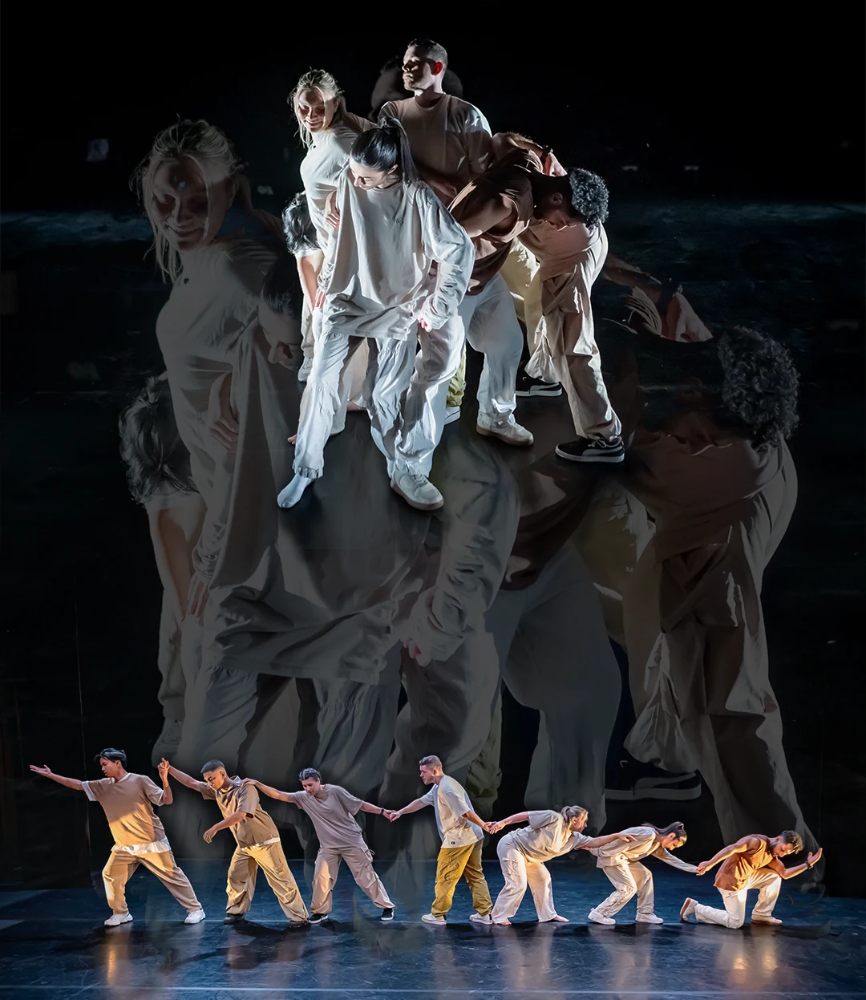

Our Story
"Diversity creates community, Community creates culture"
We are TMRW Crew, an Edinburgh based dance crew specialising from a variety of dance styles such as Hip-Hop, House, Popping, Waacking, Breaking, and more. Our greatest strength lies in our diversity and ability to collaborate across styles to create art and performance.

TMRW Crew was founded in 2020 in Edinburgh, when a group of dancers came together after lockdown restrictions were lifted. What began as casual meetups at Victoria Park to cypher and play basketball soon evolved into something more. The name TMRW Crew originated from our WhatsApp group chat — "tomorrow" — which we used to plan our next sessions at the time.
The founding members — Shok, Nevil, Marco, and Ursula — later welcomed new members who shared the same passion, values, and community spirit. Our approach to growth has always been organic: we invite dancers who excel in their craft, share our community roots, and bring positive vibes. Today, TMRW Crew is 12 members strong.
Our work spans performances in theatres across Scotland, including Dance Base and Breakin’ Convention, as well as street busking during the Edinburgh Fringe, teaching workshops/classes, creating original dance content on Instagram and YouTube, and producing crew showcases.

TMRW Crew also has a strong presence in the UK battle scene, with our freestylers competing in hip-hop, house, popping, and waacking categories.
Beyond dance, our other creative outlets include photography, videography, design and fashion. While some members pursue dance professionally and others balance it with different careers, we remain united by a shared commitment to creating and collaborating. Whether it’s a theatre production, a community project, or a commercial gig, we come together to move and inspire one another, and ultimately spread the culture wherever we go.